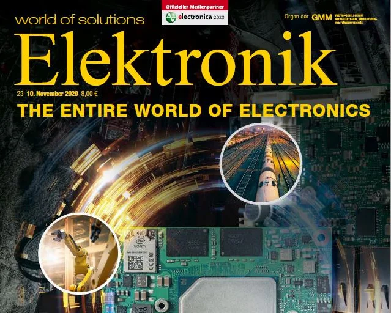

November 10, 2020
Security article in Elektronik magazine
Elektronik magazine presents qiio’s secure edge-to-cloud solution in its November release. The security article is focused on embedded development and cloud services. The magazine is available as an e-paper.

An online version can be found here [in German]:
Mobilfunk mit Azure Sphere? Aber sicher!